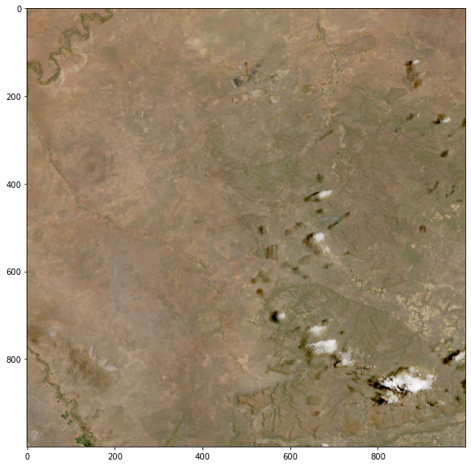

1. Getting Started ¶
2. Navigating the CMR-STAC API ¶
Learn about navigating NASA’s Common Metadata Repository (CMR) SpatioTemporal Asset Catalog (STAC) API.¶
2.1 Introduction to the CMR-STAC API ¶
What is STAC?¶
STAC is a specification that provides a common language for interpreting geospatial information in order to standardize indexing and discovering data.
Four STAC Specifications:¶
In the section below, we will walk through an example of each specification. For additional information, check out: https://stacspec.org/.¶
1. STAC API: Endpoint that enables the querying of STAC items.¶
Below, set the CMR-STAC API Endpoint to a variable, and use the requests package to send a GET request to the endpoint, and set the response to a variable.¶
stac = 'https://cmr.earthdata.nasa.gov/stac/' # CMR-STAC API Endpoint
stac_response = r.get(stac).json() # Call the STAC API endpoint
for s in stac_response: print(s)
id
title
stac_version
type
description
links
print(f"You are now using the {stac_response['id']} API (STAC Version: {stac_response['stac_version']}). {stac_response['description']}")
print(f"There are {len(stac_response['links'])} STAC catalogs available in CMR.")
You are now using the stac API (STAC Version: 1.0.0-beta.2). This is the landing page for CMR-STAC. Each provider link contains a STAC endpoint.
There are 46 STAC catalogs available in CMR.
You will notice above that the CMR-STAC API contains many different endpoints–not just from NASA LP DAAC, but also contains endpoints for other NASA ESDIS DAACs.¶
2. STAC Catalog: Contains a JSON file of links that organize all of the collections available.¶
Below, search for LP DAAC Catalogs, and print the information contained in the Catalog that we will be using today, LPCLOUD.¶
stac_lp = [s for s in stac_response['links'] if 'LP' in s['title']] # Search for only LP-specific catalogs
# LPCLOUD is the STAC catalog we will be using and exploring today
lp_cloud = r.get([s for s in stac_lp if s['title'] == 'LPCLOUD'][0]['href']).json()
for l in lp_cloud: print(f"{l}: {lp_cloud[l]}")
id: LPCLOUD
title: LPCLOUD
description: Root catalog for LPCLOUD
type: Catalog
stac_version: 1.0.0-beta.2
links: [{'rel': 'self', 'href': 'https://cmr.earthdata.nasa.gov/stac/LPCLOUD', 'title': 'Provider catalog', 'type': 'application/json'}, {'rel': 'root', 'href': 'https://cmr.earthdata.nasa.gov/stac/', 'title': 'Root catalog', 'type': 'application/json'}, {'rel': 'collections', 'href': 'https://cmr.earthdata.nasa.gov/stac/LPCLOUD/collections', 'title': 'Provider Collections', 'type': 'application/json'}, {'rel': 'search', 'href': 'https://cmr.earthdata.nasa.gov/stac/LPCLOUD/search', 'title': 'Provider Item Search', 'type': 'application/geo+json', 'method': 'GET'}, {'rel': 'search', 'href': 'https://cmr.earthdata.nasa.gov/stac/LPCLOUD/search', 'title': 'Provider Item Search', 'type': 'application/geo+json', 'method': 'POST'}, {'rel': 'conformance', 'href': 'https://cmr.earthdata.nasa.gov/stac/LPCLOUD/conformance', 'title': 'Conformance Classes', 'type': 'application/geo+json'}, {'rel': 'service-desc', 'href': 'https://api.stacspec.org/v1.0.0-beta.1/openapi.yaml', 'title': 'OpenAPI Doc', 'type': 'application/vnd.oai.openapi+json;version=3.0'}, {'rel': 'service-doc', 'href': 'https://api.stacspec.org/v1.0.0-beta.1/index.html', 'title': 'HTML documentation', 'type': 'text/html'}, {'rel': 'child', 'href': 'https://cmr.earthdata.nasa.gov/stac/LPCLOUD/collections/ASTGTM.v003', 'type': 'application/json'}, {'rel': 'child', 'href': 'https://cmr.earthdata.nasa.gov/stac/LPCLOUD/collections/HLSL30.v1.5', 'type': 'application/json'}, {'rel': 'child', 'href': 'https://cmr.earthdata.nasa.gov/stac/LPCLOUD/collections/HLSS30.v1.5', 'type': 'application/json'}]
conformsTo: ['https://api.stacspec.org/v1.0.0-beta.1/core', 'https://api.stacspec.org/v1.0.0-beta.1/item-search', 'https://api.stacspec.org/v1.0.0-beta.1/item-search#fields', 'https://api.stacspec.org/v1.0.0-beta.1/item-search#query', 'https://api.stacspec.org/v1.0.0-beta.1/item-search#sort', 'https://api.stacspec.org/v1.0.0-beta.1/item-search#context', 'http://www.opengis.net/spec/ogcapi-features-1/1.0/conf/core', 'http://www.opengis.net/spec/ogcapi-features-1/1.0/conf/oas30', 'http://www.opengis.net/spec/ogcapi-features-1/1.0/conf/geojson']
Below, print the links contained in the LP CLOUD STAC Catalog:¶
lp_links = lp_cloud['links']
for l in lp_links:
try:
print(f"{l['href']} is the {l['title']}")
except:
print(f"{l['href']}")
https://cmr.earthdata.nasa.gov/stac/LPCLOUD is the Provider catalog
https://cmr.earthdata.nasa.gov/stac/ is the Root catalog
https://cmr.earthdata.nasa.gov/stac/LPCLOUD/collections is the Provider Collections
https://cmr.earthdata.nasa.gov/stac/LPCLOUD/search is the Provider Item Search
https://cmr.earthdata.nasa.gov/stac/LPCLOUD/search is the Provider Item Search
https://cmr.earthdata.nasa.gov/stac/LPCLOUD/conformance is the Conformance Classes
https://api.stacspec.org/v1.0.0-beta.1/openapi.yaml is the OpenAPI Doc
https://api.stacspec.org/v1.0.0-beta.1/index.html is the HTML documentation
https://cmr.earthdata.nasa.gov/stac/LPCLOUD/collections/ASTGTM.v003
https://cmr.earthdata.nasa.gov/stac/LPCLOUD/collections/HLSL30.v1.5
https://cmr.earthdata.nasa.gov/stac/LPCLOUD/collections/HLSS30.v1.5
3. STAC Collection: Extension of STAC Catalog containing additional information that describe the STAC Items in that Collection.¶
Below, get a response from the LPCLOUD Collection and print the information included in the response.¶
lp_collections = [l['href'] for l in lp_links if l['rel'] == 'collections'][0] # Set collections endpoint to variable
collections_response = r.get(f"{lp_collections}").json() # Call collections endpoint
print(f"This collection contains {collections_response['description']} ({len(collections_response['collections'])} available)")
This collection contains All collections provided by LPCLOUD (3 available)
As of March 3, 2021, there are three collections available, and more will be added in the future.¶
Print out one of the collections:¶
collections = collections_response['collections']
collections[1]
{'id': 'HLSL30.v1.5',
'stac_version': '1.0.0-beta.2',
'license': 'not-provided',
'title': 'HLS Operational Land Imager Surface Reflectance and TOA Brightness Daily Global 30 m V1.5',
'type': 'Collection',
'description': 'PROVISIONAL - The Harmonized Landsat and Sentinel-2 (HLS) project provides consistent surface reflectance (SR) and top of atmosphere (TOA) brightness data from the Operational Land Imager (OLI) aboard the joint NASA/USGS Landsat 8 satellite and the Multi-Spectral Instrument (MSI) aboard Europe’s Copernicus Sentinel-2A and Sentinel-2B satellites. The combined measurement enables global observations of the land every 2–3 days at 30-meter (m) spatial resolution. The HLS project uses a set of algorithms to obtain seamless products from OLI and MSI that include atmospheric correction, cloud and cloud-shadow masking, spatial co-registration and common gridding, illumination and view angle normalization, and spectral bandpass adjustment. \r\n\r\nThe HLSL30 product provides 30-m Nadir Bidirectional Reflectance Distribution Function (BRDF)-Adjusted Reflectance (NBAR) and is derived from Landsat 8 OLI data products. The HLSS30 (https://doi.org/10.5067/HLS/HLSS30.015) and HLSL30 products are gridded to the same resolution and Military Grid Reference System (MGRS) (https://hls.gsfc.nasa.gov/products-description/tiling-system/) tiling system, and thus are “stackable” for time series analysis.\r\n\r\nThe HLSL30 product is provided in Cloud Optimized GeoTIFF (COG) format, and each band is distributed as a separate file. There are 10 bands included in the HLSL30 product along with one quality assessment (QA) band and four angle bands. For a more detailed description of the individual bands provided in the HLSL30 product, please see the User Guide (https://lpdaac.usgs.gov/documents/878/HLS_User_Guide_V15_provisional.pdf).\r\n\r\n',
'links': [{'rel': 'self',
'href': 'https://cmr.earthdata.nasa.gov/stac/LPCLOUD/collections/HLSL30.v1.5',
'title': 'Info about this collection',
'type': 'application/json'},
{'rel': 'root',
'href': 'https://cmr.earthdata.nasa.gov/stac',
'title': 'Root catalog',
'type': 'application/json'},
{'rel': 'parent',
'href': 'https://cmr.earthdata.nasa.gov/stac/LPCLOUD',
'title': 'Parent catalog',
'type': 'application/json'},
{'rel': 'items',
'href': 'https://cmr.earthdata.nasa.gov/stac/LPCLOUD/collections/HLSL30.v1.5/items',
'title': 'Granules in this collection',
'type': 'application/json'},
{'rel': 'about',
'href': 'https://cmr.earthdata.nasa.gov/search/concepts/C1711972753-LPCLOUD.html',
'title': 'HTML metadata for collection',
'type': 'text/html'},
{'rel': 'via',
'href': 'https://cmr.earthdata.nasa.gov/search/concepts/C1711972753-LPCLOUD.json',
'title': 'CMR JSON metadata for collection',
'type': 'application/json'}],
'extent': {'crs': 'http://www.opengis.net/def/crs/OGC/1.3/CRS84',
'spatial': {'bbox': [[-180, -90, 180, 90]]},
'trs': 'http://www.opengis.net/def/uom/ISO-8601/0/Gregorian',
'temporal': {'interval': [['2013-04-11T00:00:00.000Z', None]]}}}
In CMR, id is used to query by a specific product, so be sure to save the ID for the HLS S30 and L30 V1.5 products below:¶
# Search available collections for HLS and print them out
hls_collections = [c for c in collections if 'HLS' in c['title']]
for h in hls_collections: print(f"{h['title']} has an ID (shortname) of: {h['id']}")
HLS Operational Land Imager Surface Reflectance and TOA Brightness Daily Global 30 m V1.5 has an ID (shortname) of: HLSL30.v1.5
HLS Sentinel-2 Multi-spectral Instrument Surface Reflectance Daily Global 30 m V1.5 has an ID (shortname) of: HLSS30.v1.5
Note that the “id” shortname is in the format: productshortname.vVVV (where VVV = product version)¶
Explore the attributes contained in the HLSS30 Collection.¶
s30 = [h for h in hls_collections if h['id'] == 'HLSS30.v1.5'][0] # Grab HLSS30 collection
for s in s30['extent']: print(f"{s}: {s30['extent'][s]}") # Check out the extent of this collection
crs: http://www.opengis.net/def/crs/OGC/1.3/CRS84
spatial: {'bbox': [[-180, -90, 180, 90]]}
trs: http://www.opengis.net/def/uom/ISO-8601/0/Gregorian
temporal: {'interval': [['2014-04-03T00:00:00.000Z', None]]}
So here we can see that the extent is global, and can also see the temporal range–where “None” means on-going or to present.¶
print(f"HLS S30 Start Date is: {s30['extent']['temporal']['interval'][0][0]}")
s30_id = s30['id']
HLS S30 Start Date is: 2014-04-03T00:00:00.000Z
Next, explore the attributes of the HLSL30 collection.¶
l30 = [h for h in hls_collections if h['id'] == 'HLSL30.v1.5'][0] # Grab HLSL30 collection
for l in l30['extent']: print(f"{l}: {l30['extent'][l]}") # Check out the extent of this collection
print(f"HLS L30 Start Date is: {l30['extent']['temporal']['interval'][0][0]}")
l30_id = l30['id']
crs: http://www.opengis.net/def/crs/OGC/1.3/CRS84
spatial: {'bbox': [[-180, -90, 180, 90]]}
trs: http://www.opengis.net/def/uom/ISO-8601/0/Gregorian
temporal: {'interval': [['2013-04-11T00:00:00.000Z', None]]}
HLS L30 Start Date is: 2013-04-11T00:00:00.000Z
Above, notice that the L30 product has a different start date than the S30 product.¶
4. STAC Item: Represents data and metadata assets that are spatiotemporally coincident¶
Below, query the HLSS30 collection for items and return the first item in the collection.¶
# Below, go through all links in the collection and return the link containing the items endpoint
s30_items = [s['href'] for s in s30['links'] if s['rel'] == 'items'][0] # Set items endpoint to variable
s30_items
'https://cmr.earthdata.nasa.gov/stac/LPCLOUD/collections/HLSS30.v1.5/items'
s30_items_response = r.get(f"{s30_items}").json() # Call items endpoint
s30_item = s30_items_response['features'][0] # select first item (10 items returned by default)
s30_item
{'type': 'Feature',
'id': 'G1969487860-LPCLOUD',
'stac_version': '1.0.0-beta.2',
'stac_extensions': ['eo'],
'collection': 'HLSS30.v1.5',
'geometry': {'type': 'Polygon',
'coordinates': [[[-119.1488671, 33.3327671],
[-118.9832795, 33.3355226],
[-118.6783731, 34.3301598],
[-119.1737801, 34.3223655],
[-119.1488671, 33.3327671]]]},
'bbox': [-119.17378, 33.332767, -118.678373, 34.33016],
'links': [{'rel': 'self',
'href': 'https://cmr.earthdata.nasa.gov/stac/LPCLOUD/collections/HLSS30.v1.5/items/G1969487860-LPCLOUD'},
{'rel': 'parent',
'href': 'https://cmr.earthdata.nasa.gov/stac/LPCLOUD/collections/HLSS30.v1.5'},
{'rel': 'collection',
'href': 'https://cmr.earthdata.nasa.gov/stac/LPCLOUD/collections/HLSS30.v1.5'},
{'rel': 'root', 'href': 'https://cmr.earthdata.nasa.gov/stac/'},
{'rel': 'provider', 'href': 'https://cmr.earthdata.nasa.gov/stac/LPCLOUD'},
{'rel': 'via',
'href': 'https://cmr.earthdata.nasa.gov/search/concepts/G1969487860-LPCLOUD.json'},
{'rel': 'via',
'href': 'https://cmr.earthdata.nasa.gov/search/concepts/G1969487860-LPCLOUD.umm_json'}],
'properties': {'datetime': '2015-08-26T18:54:35.450Z',
'start_datetime': '2015-08-26T18:54:35.450Z',
'end_datetime': '2015-08-26T18:54:35.450Z',
'eo:cloud_cover': 6},
'assets': {'VZA': {'title': 'Download HLS.S30.T11SLT.2015238T185436.v1.5.VZA.tif',
'href': 'https://lpdaac.earthdata.nasa.gov/lp-prod-protected/HLSS30.015/HLS.S30.T11SLT.2015238T185436.v1.5.VZA.tif'},
'VAA': {'title': 'Download HLS.S30.T11SLT.2015238T185436.v1.5.VAA.tif',
'href': 'https://lpdaac.earthdata.nasa.gov/lp-prod-protected/HLSS30.015/HLS.S30.T11SLT.2015238T185436.v1.5.VAA.tif'},
'SAA': {'title': 'Download HLS.S30.T11SLT.2015238T185436.v1.5.SAA.tif',
'href': 'https://lpdaac.earthdata.nasa.gov/lp-prod-protected/HLSS30.015/HLS.S30.T11SLT.2015238T185436.v1.5.SAA.tif'},
'B11': {'title': 'Download HLS.S30.T11SLT.2015238T185436.v1.5.B11.tif',
'href': 'https://lpdaac.earthdata.nasa.gov/lp-prod-protected/HLSS30.015/HLS.S30.T11SLT.2015238T185436.v1.5.B11.tif'},
'B02': {'title': 'Download HLS.S30.T11SLT.2015238T185436.v1.5.B02.tif',
'href': 'https://lpdaac.earthdata.nasa.gov/lp-prod-protected/HLSS30.015/HLS.S30.T11SLT.2015238T185436.v1.5.B02.tif'},
'B09': {'title': 'Download HLS.S30.T11SLT.2015238T185436.v1.5.B09.tif',
'href': 'https://lpdaac.earthdata.nasa.gov/lp-prod-protected/HLSS30.015/HLS.S30.T11SLT.2015238T185436.v1.5.B09.tif'},
'B12': {'title': 'Download HLS.S30.T11SLT.2015238T185436.v1.5.B12.tif',
'href': 'https://lpdaac.earthdata.nasa.gov/lp-prod-protected/HLSS30.015/HLS.S30.T11SLT.2015238T185436.v1.5.B12.tif'},
'B03': {'title': 'Download HLS.S30.T11SLT.2015238T185436.v1.5.B03.tif',
'href': 'https://lpdaac.earthdata.nasa.gov/lp-prod-protected/HLSS30.015/HLS.S30.T11SLT.2015238T185436.v1.5.B03.tif'},
'B01': {'title': 'Download HLS.S30.T11SLT.2015238T185436.v1.5.B01.tif',
'href': 'https://lpdaac.earthdata.nasa.gov/lp-prod-protected/HLSS30.015/HLS.S30.T11SLT.2015238T185436.v1.5.B01.tif'},
'B07': {'title': 'Download HLS.S30.T11SLT.2015238T185436.v1.5.B07.tif',
'href': 'https://lpdaac.earthdata.nasa.gov/lp-prod-protected/HLSS30.015/HLS.S30.T11SLT.2015238T185436.v1.5.B07.tif'},
'SZA': {'title': 'Download HLS.S30.T11SLT.2015238T185436.v1.5.SZA.tif',
'href': 'https://lpdaac.earthdata.nasa.gov/lp-prod-protected/HLSS30.015/HLS.S30.T11SLT.2015238T185436.v1.5.SZA.tif'},
'B05': {'title': 'Download HLS.S30.T11SLT.2015238T185436.v1.5.B05.tif',
'href': 'https://lpdaac.earthdata.nasa.gov/lp-prod-protected/HLSS30.015/HLS.S30.T11SLT.2015238T185436.v1.5.B05.tif'},
'B06': {'title': 'Download HLS.S30.T11SLT.2015238T185436.v1.5.B06.tif',
'href': 'https://lpdaac.earthdata.nasa.gov/lp-prod-protected/HLSS30.015/HLS.S30.T11SLT.2015238T185436.v1.5.B06.tif'},
'Fmask': {'title': 'Download HLS.S30.T11SLT.2015238T185436.v1.5.Fmask.tif',
'href': 'https://lpdaac.earthdata.nasa.gov/lp-prod-protected/HLSS30.015/HLS.S30.T11SLT.2015238T185436.v1.5.Fmask.tif'},
'B10': {'title': 'Download HLS.S30.T11SLT.2015238T185436.v1.5.B10.tif',
'href': 'https://lpdaac.earthdata.nasa.gov/lp-prod-protected/HLSS30.015/HLS.S30.T11SLT.2015238T185436.v1.5.B10.tif'},
'B08': {'title': 'Download HLS.S30.T11SLT.2015238T185436.v1.5.B08.tif',
'href': 'https://lpdaac.earthdata.nasa.gov/lp-prod-protected/HLSS30.015/HLS.S30.T11SLT.2015238T185436.v1.5.B08.tif'},
'B8A': {'title': 'Download HLS.S30.T11SLT.2015238T185436.v1.5.B8A.tif',
'href': 'https://lpdaac.earthdata.nasa.gov/lp-prod-protected/HLSS30.015/HLS.S30.T11SLT.2015238T185436.v1.5.B8A.tif'},
'B04': {'title': 'Download HLS.S30.T11SLT.2015238T185436.v1.5.B04.tif',
'href': 'https://lpdaac.earthdata.nasa.gov/lp-prod-protected/HLSS30.015/HLS.S30.T11SLT.2015238T185436.v1.5.B04.tif'},
'browse': {'title': 'Download HLS.S30.T11SLT.2015238T185436.v1.5.jpg',
'href': 'https://lpdaac.earthdata.nasa.gov/lp-prod-public/HLSS30.015/HLS.S30.T11SLT.2015238T185436.v1.5.jpg',
'type': 'image/jpeg'},
'metadata': {'href': 'https://cmr.earthdata.nasa.gov/search/concepts/G1969487860-LPCLOUD.xml',
'type': 'application/xml'}}}
STAC metadata provides valuable information on the item, including a unique ID, when it was acquired, the location of the observation, and a cloud cover assessment.¶
# Print metadata attributes from this observation
print(f"The ID for this item is: {s30_item['id']}")
print(f"It was acquired on: {s30_item['properties']['datetime']}")
print(f"over: {s30_item['bbox']} (Lower Left, Upper Right corner coordinates)")
print(f"It contains {len(s30_item['assets'])} assets")
print(f"and is {s30_item['properties']['eo:cloud_cover']}% cloudy.")
The ID for this item is: G1969487860-LPCLOUD
It was acquired on: 2015-08-26T18:54:35.450Z
over: [-119.17378, 33.332767, -118.678373, 34.33016] (Lower Left, Upper Right corner coordinates)
It contains 20 assets
and is 6% cloudy.
Below, print out the ten items and the percent cloud cover–we will use this to decide which item to visualize in the next section.¶
for i, s in enumerate(s30_items_response['features']):
print(f"Item at index {i} is {s['properties']['eo:cloud_cover']}% cloudy.")
Item at index 0 is 6% cloudy.
Item at index 1 is 100% cloudy.
Item at index 2 is 30% cloudy.
Item at index 3 is 67% cloudy.
Item at index 4 is 99% cloudy.
Item at index 5 is 24% cloudy.
Item at index 6 is 15% cloudy.
Item at index 7 is 3% cloudy.
Item at index 8 is 6% cloudy.
Item at index 9 is 6% cloudy.
Using the information printed above, set the item_index below to whichever observation is the least cloudy above.¶
item_index = 9 # Indexing starts at 0 in Python, so here select the eighth item in the list at index 7
s30_item = s30_items_response['features'][item_index] # Grab the next item in the list
print(f"The ID for this item is: {s30_item['id']}")
print(f"It was acquired on: {s30_item['properties']['datetime']}")
print(f"over: {s30_item['bbox']} (Lower Left, Upper Right corner coordinates)")
print(f"It contains {len(s30_item['assets'])} assets")
print(f"and is {s30_item['properties']['eo:cloud_cover']}% cloudy.")
The ID for this item is: G2010297093-LPCLOUD
It was acquired on: 2016-11-06T08:21:39.880Z
over: [26.999803, -24.501758, 28.083499, -23.506303] (Lower Left, Upper Right corner coordinates)
It contains 20 assets
and is 6% cloudy.
Below, print out the names of all of the assets included in this item.¶
print("The following assets are available for download:")
for a in s30_item['assets']: print(a)
The following assets are available for download:
B05
B09
VZA
B06
B08
B10
B03
B11
B07
Fmask
B04
B12
VAA
SAA
B01
B02
B8A
SZA
browse
metadata
Notice that each HLS item includes a browse image. Read the browse file into memory and visualize the HLS acquisition.¶
s30_item['assets']['browse']
{'title': 'Download HLS.S30.T35KNP.2016311T080122.v1.5.jpg',
'href': 'https://lpdaac.earthdata.nasa.gov/lp-prod-public/HLSS30.015/HLS.S30.T35KNP.2016311T080122.v1.5.jpg',
'type': 'image/jpeg'}
Use the skimage package to load the browse image into memory and matplotlib to quickly visualize it.¶
image = io.imread(s30_item['assets']['browse']['href']) # Load jpg browse image into memory
# Basic plot of the image
plt.figure(figsize=(10,10))
plt.imshow(image)
plt.show()
